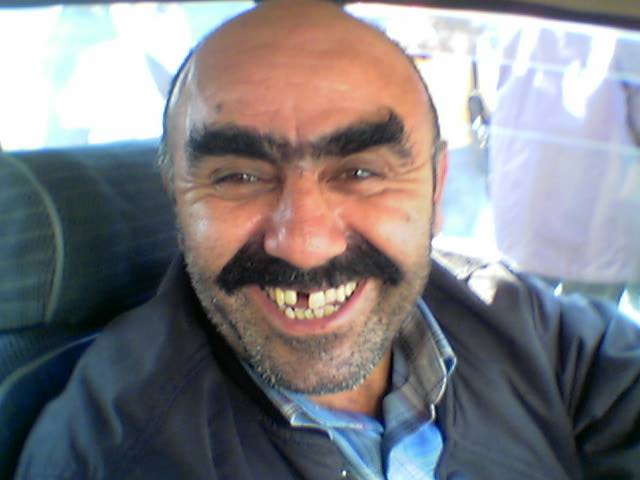

Estilos
-
Handlebar

-
Mario
Paree uma carroça de duas rodas!?
Sinônimo de honradez na tradição européia.
"PQP, o cara monta dragões e apavora geral!"
Algum dos mosqueteiros usava um mosquete?
Sério? Qual o problema com a palavra motoserra?
Aqui um caso de bigode duplo
/
#